Recorded passes cover populated navigation, missing/loading/unavailable data and Accessibility XXXL at one Simulator width.
03 / NATIVE iOS / CONSUMER HARDWARE
Formula None Fitness
Fitness software at the hardware boundary. A native iOS fitness project bringing workouts, activity, body trends, goals and nutrition together—and investigating the consumer devices behind the data.
CURRENT CHECKPOINT · Today M1 is implemented in Simulator. The other Fusion screens remain approved artwork; physical-device and hardware acceptance are separate.
APPROVED → IMPLEMENTED
Today, from direction
to native implementation.
These are different kinds of evidence. Both images use fictional demonstration data.
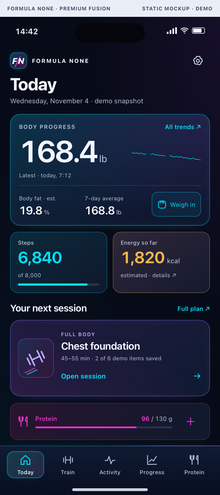
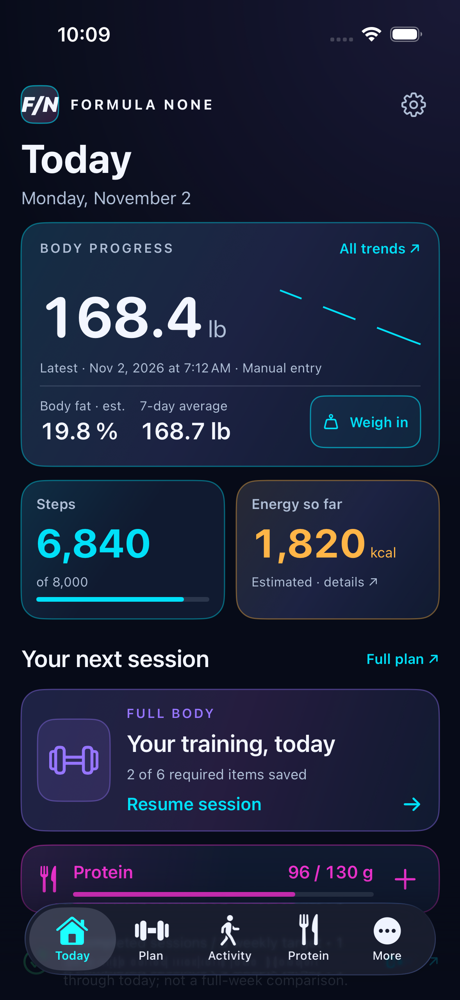
The hierarchy and palette carry through; native safe areas, typography and the floating tab bar differ. M1 preserves Today / Plan / Activity / Protein / More. The other Fusion screens are not part of this redesign. Physical iPhone installation and owner acceptance remain pending.
The report lists 139 passing portable checks plus 17 scale-core cases. These are project records, not tests rerun by this website.
An existing workout-count regression assertion also fails on unchanged baseline. No complete-suite or hardware pass is claimed.
The report also notes content passing beneath the transparent status area while scrolling, and unverified VoiceOver, other widths and physical-device behavior.
ENGINEERING CASE STUDIES
Connecting hardware
means preserving meaning.
CASE 01 / SMART SCALE
A GE CS10G scale,
on the app’s terms.
BLE captureDecodeReviewLocal save
Experimental device integrationThe project implements a targeted GE CS10G revision’s BLE session, packet assembly and measurement interpretation. The reviewed capture path preserves profile, source and time before an explicit app-local save.
That requires more than connecting to Bluetooth: fragmented messages, checksums, capability differences and household-profile isolation all affect whether a measurement belongs in progress.
The source references published interoperability research. Physical end-to-end acceptance remains experimental. This path does not establish HealthKit writes or universal scale compatibility.
CASE 02 / WATCH COMPANION
Fresher calorie data.
Honest timing.
Zepp OSPhone receiptReview + archive
Zepp OS Active 2 · experimentalThe available watch companion targets Zepp OS Active 2. It collects counter snapshots and timing context, with phone receipts and a reviewed import path. A failed phone handoff led to a separate metadata-only BLE probe.
A cumulative calorie counter is not a stream to sum repeatedly. Source age, collection time, phone receipt and background limits must stay explicit. Automatic continuous delivery and battery reliability are not established.
iPhone HealthKit reads of supported Apple Health records are independent. No native Apple Watch/watchOS application is evidenced in the inspected material.
M1 DATA + ACCESSIBILITY STATES
Absence is a real state.
Actual Simulator captures. Empty stores and Health service states are deliberately simulated.

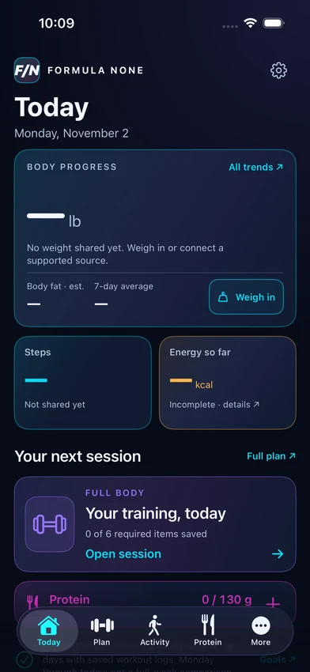
Empty Today
Unknown measurements stay unavailable; they are not fictional zeros.
ENLARGE SIMULATOR CAPTURE ↗
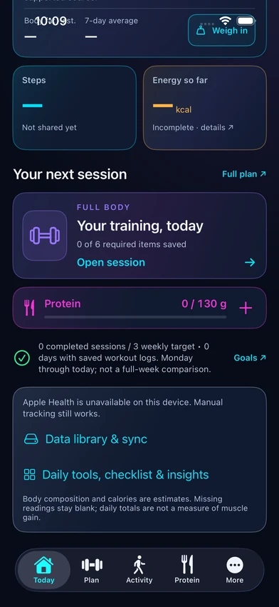
Unavailable service
A deliberately simulated unavailable state, not real HealthKit authorization.
ENLARGE SIMULATOR CAPTURE ↗
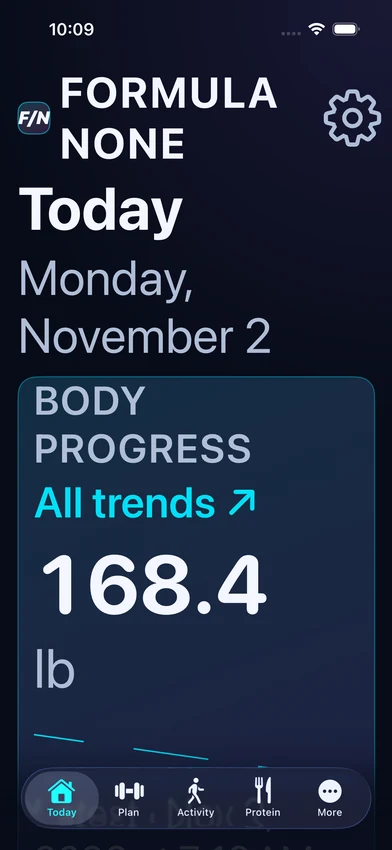
Accessibility XXXL
One recorded large-text layout; full VoiceOver and device acceptance remain separate.
ENLARGE SIMULATOR CAPTURE ↗THE PURPOSE
Fitness software at the hardware boundary.
The approved Premium Fusion direction now has a native Today M1 implementation in iOS Simulator. Scale and watch experiments add protocol, timing and data-identity challenges beyond the interface.
Train and record
Existing native models handle planned workouts, exercise records, activity, goals and nutrition. Today M1 changes presentation while preserving the existing data engines and destinations.
Keep missing data honest
Body trends separate gaps and source baselines. Energy retains coverage and overlap rules. Empty, loading and unavailable states are explicit rather than converted into invented zeros.
Explore the hardware
The GE CS10G scale path and Zepp OS Active 2 companion contain substantial source-backed integration work. Protocol code and a UI are not substitutes for physical end-to-end acceptance.
HOW IT FITS TOGETHER
A clear boundary
at every step.
A simplified architecture: responsibilities, not private infrastructure or deployment instructions.
Inputs
Manual records + Health reads
Native models
Identity, dates + persistence
Domain engines
Energy + progress rules
SwiftUI
Today + existing destinations
The diagram describes source-backed responsibilities. It does not establish that every path is deployed or physically validated.
THE ENGINEERING CHALLENGE
A valid packet can still be the wrong measurement.
What the work revealed
Hardware integration must preserve profile identity, timing, units and meaning. A packet can decode correctly yet belong to another profile; a repeated daily calorie counter must not be summed as a stream. Those are product correctness problems as much as connectivity problems.
What the evidence supports
The available companion targets Zepp OS Active 2. Apple Health reads on iPhone are a separate integration. No native Apple Watch/watchOS application or uninterrupted calorie-reporting capability is claimed.
VISUAL TOUR
Explore the interface.
Images are clearly scoped. Open a screenshot to inspect the original-derived, full-resolution copy.

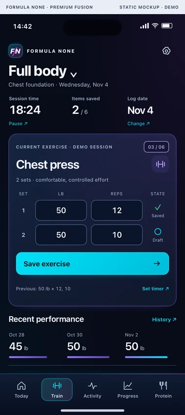
Workouts
Approved Fusion artwork; not the M1 native redesign.
ENLARGE ORIGINAL-DERIVED IMAGE ↗
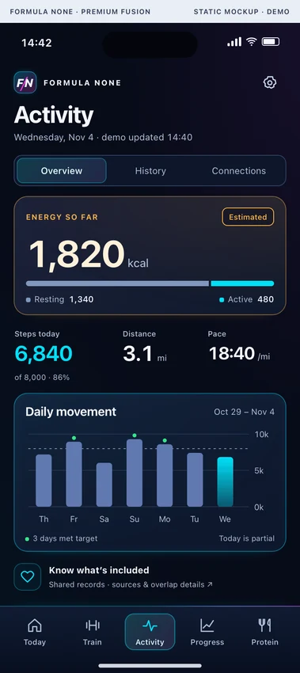
Activity
Approved artwork with fictional energy and movement values.
ENLARGE ORIGINAL-DERIVED IMAGE ↗
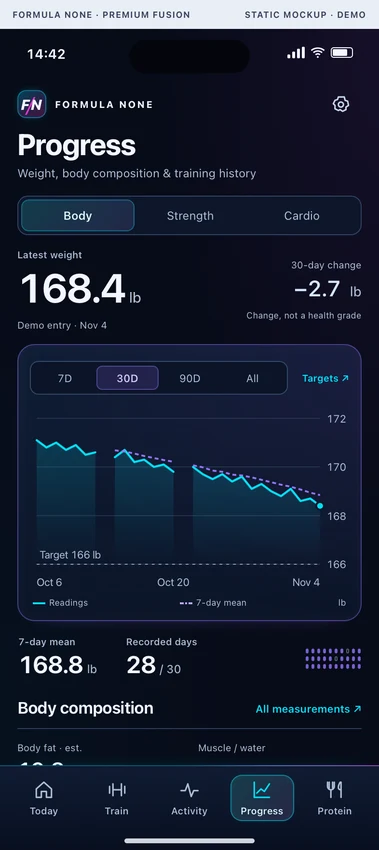
Progress
Approved body-trend design with fictional records.
ENLARGE ORIGINAL-DERIVED IMAGE ↗
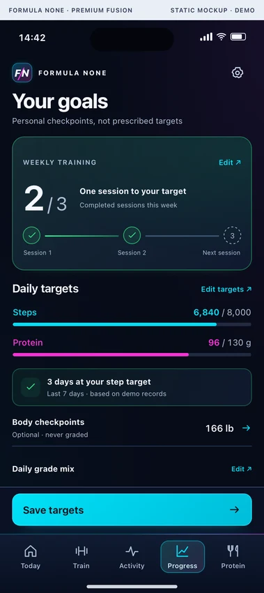
Goals
Approved target-setting design, not a medical recommendation.
ENLARGE ORIGINAL-DERIVED IMAGE ↗
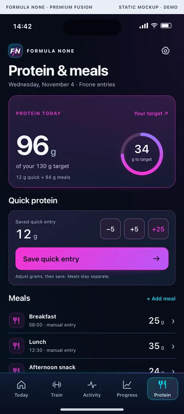
Protein and nutrition
Approved artwork with fictional meal entries.
ENLARGE ORIGINAL-DERIVED IMAGE ↗
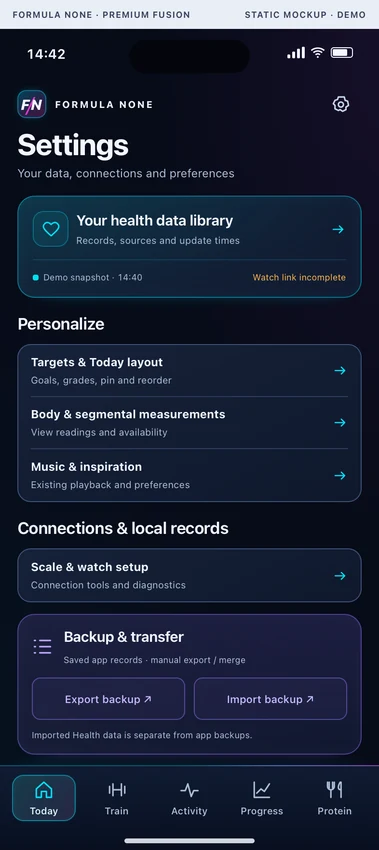
Navigation and Settings
Approved artwork; existing native destinations are preserved in M1.
ENLARGE ORIGINAL-DERIVED IMAGE ↗STATUS, WITHOUT THE SPIN
What exists.
What comes next.
| Implemented + recorded UI checks | Today M1 in iPhone Simulator with isolated synthetic stores. |
|---|---|
| Approved design only | Fusion Workouts, Activity, Progress, Goals, Nutrition and Settings visual redesigns. |
| Experimental | GE CS10G direct capture and Zepp companion delivery paths. |
| Not established | Physical iPhone acceptance, continuous watch delivery or native watchOS app. |
Based on reviewed source and dated implementation records. This portfolio website does not run the application or certify current production state.
THE TAKEAWAY
Keep the project story.
Reviewed project summaries; unpublished pending owner approval.
Formula None Fitness
One-page introduction to native fitness and hardware work.
Download PDF · 0.1 MBFormula None Fitness Showcase
Six-page native fitness, smart-scale and watch story.
Download PDF · 0.4 MB